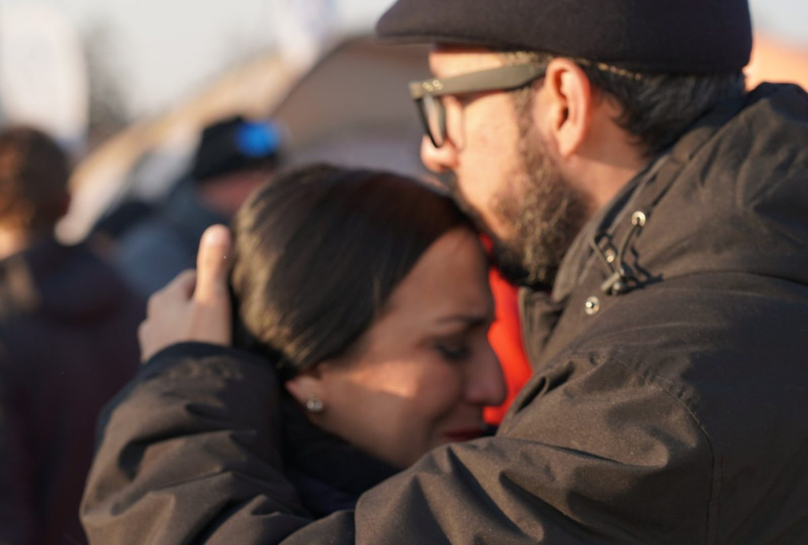
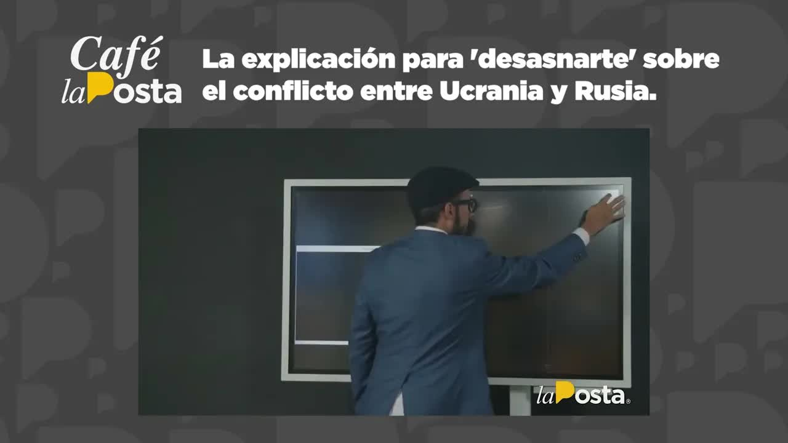
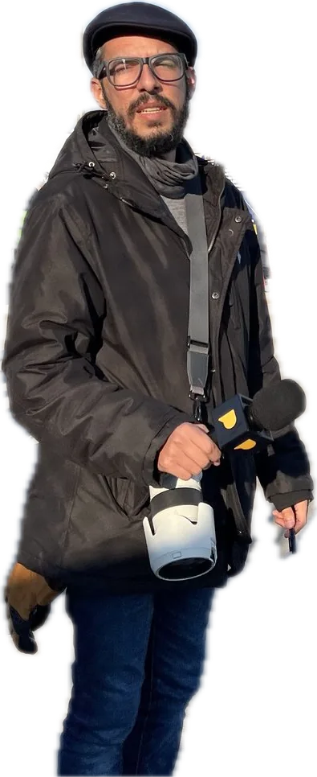

Daily podcast · La PostaA Correspondent's DiaryFebruary 24 to August 19, 2022
La Posta · February to August 2022 · Coverage of the Russian invasion
Ukraine, day by day
Russia crossed the border before dawn on February 24, 2022, and La Posta launched its coverage that same day. What carried it was a daily podcast, A Correspondent's Diary, recorded first in Quito and then from the Polish border and from Lviv, where La Posta was the only Ecuadorian outlet on Ukrainian soil. According to the team itself, it became the most listened-to podcast in the country during those days. This is the complete log: day one with an Ecuadorian student in Zaporizhzhia, the map on day eight, the explainer on day twelve, the seven days on the road, the U.S. ambassador at day forty, the deputy minister behind the return flights and the six-month review.
Coverage Andersson Boscán, Mónica Velásquez, Jefferson Sanguña, José María Gil and Hernando TapiaOutlet La PostaPublished February 24 to August 19, 2022

At the border. Boscán and La Moni at the border crossing. Investigation material
Feb 24, 2022the invasion begins
9diary installments
7 dayson the ground in Medyka and Lviv
716repatriated on three flights
In four sentences
Vladimir Putin ordered the invasion of Ukraine before dawn on February 24, 2022. Seventeen cities were attacked on the first night.
La Posta covered the war live from day one: maps, explainers, interviews with trapped Ecuadorians, with the U.S. ambassador and with the deputy minister who organized the return flights.
On three flights from Hungary and Poland, plus a Mexican flight and commercial flights, 730 people came home, according to Deputy Minister Luis Vayas, who ran the operation from Przemyśl, Poland.
Six months on, the coverage continued. So did the war.
Chapter 1
A Correspondent's Diary
The Ukraine coverage was not told first in the studio: it was told in audio. Every day, from Quito and later from the Polish border and from Lviv, La Posta recorded an episode of A Correspondent's Diary, the podcast that carried its coverage of the invasion. According to the team itself, it became the most listened-to podcast in the country during those days; the episode about the trip spent a week as the third most played on Spotify in Ecuador. Boscán, Mónica Velásquez, José María Gil and Hernando Tapia traveled to Medyka and Lviv in the third week of the war, the only Ecuadorian journalists on Ukrainian soil; in Quito, Jefferson Sanguña co-hosted the shows. Nine installments, from day one to the six-month review.
1:01Entering Ukraine
A Correspondent's Diary
The coverage, episode by episode
Day 1Quito ↔ Zaporizhzhia
The invasion begins
Diana Vallejo, a medical student in Zaporizhzhia, describes the panic, the shut-down trains and the empty ATMs. The Foreign Ministry speaks of 450 Ecuadorians.
The week on the ground: Medyka at seven degrees below zero, 45,000 people a day, Lviv hit by six missiles and a school turned into a shelter. This was the most listened-to episode.
The original audio files are not yet in this archive. They will be linked here, episode by episode, as soon as the recordings are located. In the meantime, each day's TV show is one click away.
Before dawn on February 24, 2022, Russia crossed the border. Vladimir Putin called it a special military operation, and 17 cities were attacked on the first night. Café la Posta went on air that same day with an Ecuadorian student in Zaporizhzhia and an analysis of what was beginning. The next day, day two, came another full edition. The Foreign Ministry's count of Ecuadorians located rose from 450 to 700 and then to 913. From then on, each installment of the diary put on record what was known that day. Below is the log, with the map La Moni prepared for each broadcast.
Log
Day by day
Day 1
The invasion begins
At five in the morning, Kyiv time, Putin announced a special military operation. Missiles fell on 17 cities. Café la Posta, with Boscán and Jefferson Sanguña, went on air that same day with Diana Vallejo, an Ecuadorian medical student in Zaporizhzhia and a spokesperson for the students. She described the panic, the closed borders and trains, the ATMs with no cash and a Foreign Ministry that "was only just starting to make arrangements": the advice was to head west, to Lviv. The Foreign Ministry reported 450 Ecuadorians identified, 85 percent of them students between 18 and 25. And there was the analysis of what was beginning: the Donbas, where Russia had kept troops for eight years, and Crimea, annexed in 2014.
Another full edition, now with Mónica Velásquez in the studio: Russian columns moving down from Belarus toward Kyiv; an Ecuadorian in Kyiv who had gone fifty hours without sleep, with a building bombed five blocks away; another in Zaporizhzhia, fifteen hours from the border with twenty dollars in his wallet. You think the only hard part is the bombs falling, Boscán summed up. The Foreign Ministry now counted 700 Ecuadorians in Ukraine. Foreign Minister Juan Carlos Holguín announced that Poland would take in Ecuadorians without a visa and that a team led by the deputy minister for Human Mobility would travel to Warsaw; Boscán acknowledged that Holguín had risen to the occasion in his first crisis. Ecuador sold Russia 1.3 billion dollars a year in flowers, shrimp and bananas.
Boscán took the map. Kherson, the first major city to fall, the night before. Mariupol, eight days of fighting and cluster bombs reported by the UN. Fighting in the Chernobyl zone. The Russian plan: take Odesa and Mariupol to cut Ukraine off from the sea. To the north, a 60-kilometer convoy stalled by mud and by the road signs Ukrainians had taken down, with expired food and tanks out of fuel. Four and a half minutes.
The first passengers of the humanitarian flight arrived in Quito. Deputy Minister Vayas later laid out the operation's numbers on Veraz: 246, 203 and 190 passengers on the three flights, plus 9 on a Mexican humanitarian flight and 82 on commercial flights coordinated by the government, for a total of 730 people. The first plane left with empty seats because of the pets: only three fit in the cabin and five in the hold, and nobody agreed to give theirs up for adoption. Some 200 Ecuadorians chose to stay in Europe.
Day 12
So we don't talk without knowing
Twelve minutes with the full map, which La Moni had prepared the day before. Three fronts and four key points: the south, from Crimea toward Kherson, Mariupol and Odesa; the east, with Kharkiv, the second city, in ruins; Kyiv encircled from the north; and the Zaporizhzhia nuclear plant, the largest in Europe, the scene of the first fighting ever at a nuclear power plant. Putin's aim was a corridor linking the Donbas with Crimea and a horseshoe that would crush the resistance against the borders of Poland, Romania and Moldova. Half a million people were trapped in Mariupol without electricity, water or heating at four degrees below zero. Thirteen days in, the resistance was still standing in four of the five major cities. That same day on Café la Posta, Mara Villacís, a student who left Kyiv on a twelve-hour train ride and stayed in Lviv handing out food at the station, explained why she was not coming home and accused the Foreign Ministry of announcing trains that were actually part of the Ukrainian rail system. She was worried about seven classmates trapped in a bunker in Sumy.
Four people from La Posta, Boscán, Velásquez, José María Gil and Hernando Tapia, traveled to the Polish-Ukrainian border and crossed into Lviv: seven days of coverage, the only Ecuadorian outlet on Ukrainian soil. The first night was in Medyka, at seven degrees below zero, where 45,000 people crossed every day after waiting up to 37 hours out in the open; Gil stayed behind there as a volunteer. In Lviv, a city of 700,000 that swelled to 1.4 million in three weeks and was hit by six missiles in those days, they slept in the living room of a house with three siblings who had fled Irpin. They saw a basement school turned into a shelter for two thousand people, an Ecuadorian who had lived in the country for ten years and was ready to defend it, a man of nearly seventy who got his family out and went back to patrol, young people collecting boots and ammunition, and a Polish legionnaire heading to the front. The podcast about the trip spent a week as the third most played on Spotify in Ecuador. The reports were compiled in the day 40 show.
Michael Fitzpatrick, the U.S. ambassador to Ecuador, opened by congratulating La Posta on its effort in Ukraine and sat down to answer whether the war was about to end. Putin has already failed, he said: he is not winning this war, but he can win the battle. His three goals, subduing Ukraine, dividing NATO and asserting Russian power, had all failed. The question was how long the destruction would last. The Russians had just pulled back from the outskirts of Kyiv, more than 410 bodies had been counted and the world was beginning to see Bucha: people with their hands tied and a bullet in the head, a war crime.
Veraz, Carlos Vera's show on La Posta, hosted Luis Vayas, then deputy minister for Human Mobility. Two weeks before the invasion he was already negotiating with Poland, Hungary, Slovakia and Romania to let Ecuadorians enter without visas; Ecuador has no embassy in Ukraine, and the consul in Vienna was sent to Kyiv. On the night of February 23 he opened a video call with 600 people that lasted all night. From Przemyśl, where he stayed with an elderly Polish couple who took offense when he tried to pay them, he ran the exit with 18 officials in Poland and about 120 in all. The Ecuadorian Air Force (FAE) plane was no use, with 50 seats and fifteen stopovers, so a charter was hired. He issued 213 passports, 23 percent of the total, because the companies that sold study packages were holding students' passports; he reported them to the Attorney General's Office (Fiscalía) as possible fraud. He searched for seven students whom a convoy of 34 buses had taken to Germany, shouting their names in a refugee camp. Vera dedicated the show to Jan Topic, the Ecuadorian businessman who had gone to fight.
Half a year of war. That August 19, Boscán was not in the studio: he was testifying before the Oversight Committee about the Danubio case and the customs service. Luis Eduardo and Doménica Vivanco closed the show with Ruslan Spirin, Ukraine's representative for Latin America, connected from Kyiv. According to him, 8.5 million Ukrainians had left the country and 5.5 million had already returned; Russia, which had planned to take Ukraine in three or four days, had lost 44,000 soldiers, 2,000 tanks and 400 planes and helicopters, according to Kyiv; the Zaporizhzhia plant was still occupied and mined, six reactors, ten times the danger of Chernobyl. He asked that it not be called a conflict: this is a war. Afterward we stopped talking about what was happening, Doménica said as she introduced him, but the war over there goes on.
On March 3, day eight, Andersson Boscán mapped the territory in four and a half minutes: Kherson had fallen the night before, Mariupol had seen eight days of fighting, and the Russian objective was Odesa and access to the sea. On March 7 he published the full explainer, twelve minutes to understand where the war came from: the Donbas, with a Russian military presence since 2014; Crimea, annexed that same year; the corridor Putin sought between the two; and the horseshoe with which he meant to crush the resistance against the western borders. Thirteen days in, as Boscán reported, four of the five major cities were still holding out, thanks to poor Russian logistics and a Ukrainian morale the West had not seen coming.
0:37Inside the bomb shelter

Day 12 · The explainer
The explainer for understanding the conflict between Ukraine and Russia
Volodymyr ZelenskyVolodymyr Zelensky stayed in Kyiv when analysts had already written off the capital. Context for the March 7, 2022 explainer.Photo: http://www.president.gov.ua/ · CC BY 4.0 · Wikimedia Commons
Meanwhile, the Foreign Ministry was getting people out. The humanitarian flights left from Budapest and Poland in March: 246, 203 and 190 passengers according to Deputy Minister Vayas, plus 9 on a Mexican humanitarian flight and 82 on commercial flights coordinated by the government, for 730 people arriving in Ecuador; some 200 Ecuadorians chose to stay in Europe. On April 4, at day forty, U.S. Ambassador Michael Fitzpatrick came to Café la Posta: Putin has already failed, but he can win the battle. On April 18, Vayas explained on Veraz how the evacuation was organized.
730people arrived in Ecuador, according to Deputy Minister Vayas
≈ 200Ecuadorians chose to stay in Europe
Chapter 3
What came next

Boscán at the refugee camp, on the Polish side
At six months, on August 19, 2022, the coverage took stock with Ruslan Spirin, Ukraine's representative for Latin America, from Kyiv: 8.5 million people had left the country, 5.5 million had returned, and the Zaporizhzhia plant was still occupied. Boscán did not host that day: he was testifying before the National Assembly on the Danubio case. The students who returned on the humanitarian flights complained that the scholarships promised so they could continue their degrees never materialized; in April, Vayas had said that Senescyt and universities in Hungary and Poland would find them places. The war goes on. Kherson was liberated in November 2022; Mariupol remains occupied.
0:16A refugee crosses with her dogs and a suitcase0:32The sirens: what to do when they go off
A video call with one of his daughters, during the coverage
In June 2023, Boscán closed a show with a self-critique of the profession: journalists who take money to publish and to stay quiet, who ask favors of those in power, who treat the audience as idiots and never go out into the street. I am a journalist, so I owe you an apology, he said. The Ukraine coverage had been the opposite: going to the ground before offering an opinion.
An open log
The war goes on
Repatriated on three flights (official figure)716 people; 730 arrivals in total, according to Vayas
Ecuadorians who stayed in Europe≈ 200
Scholarships promised to studentsNot delivered
KhersonLiberated in November 2022
Mariupol and the DonbasOccupied
Last update of this logSeptember 5, 2026
Updated September 5, 2026
What's missing
Unanswered questions
How many Ecuadorians are still in Ukraine
What happened to the scholarships promised to the repatriated students
How many of the 716 went back to Europe after the war
What the Attorney General's Office did with the Foreign Ministry's complaint against the companies that sold study programs in Ukraine and held on to passports
Timeline
Step by step
Feb 24, 2022
Invasion
Café la Posta goes on air with an Ecuadorian student in Zaporizhzhia. 450 Ecuadorians identified.
Feb 25, 2022
Day two
700 Ecuadorians. Holguín announces the visa-free route through Poland.
Mar 3, 2022
The map
Kherson falls. Boscán maps the advance.
Mar 4, 2022
First flight
246 passengers land in Quito, with empty seats because of the pets.
Mar 7, 2022
The explainer
Twelve minutes to understand the war. Mara Villacís, from Lviv.
Mar 9-16, 2022
The trip
Four from La Posta in Medyka and Lviv. The only Ecuadorian outlet in Ukraine.
Mar 2022
Three flights
730 people arrive, according to Vayas. About 200 stay in Europe.
Apr 4, 2022
The ambassador
Fitzpatrick: Putin has already failed, but he can win the battle.
Apr 18, 2022
Diplomacy at war
Luis Vayas on Veraz.
Aug 19, 2022
Six months
A review with Ruslan Spirin from Kyiv.
The names
Who's who
AB
La Posta
Andersson Boscán
Coverage from Quito and from Medyka and Lviv, March 2022.
MV
La Posta
Mónica Velásquez
Coverage from Quito and from the ground; prepared the maps for the explainer.
JS
La Posta
Jefferson Sanguña
Co-host of the coverage shows.
JM
La Posta
José María Gil and Hernando Tapia
Part of the team that traveled to Ukraine; Gil stayed behind as a volunteer in Medyka.
MF
Interviewed on April 4, 2022
Michael Fitzpatrick
U.S. Ambassador to Ecuador.
LV
Interviewed on Veraz
Luis Vayas
Deputy minister for Human Mobility during the evacuation; later promoted to deputy foreign minister.
RS
Interviewed
Ruslan Spirin
Ukraine's representative for Latin America; connected from Kyiv at the six-month mark.
DV
Interviewed
Diana Vallejo and Mara Villacís
Ecuadorian students in Zaporizhzhia and Lviv, the voices of day one and day twelve.
Boscán and La Moni in front of a demonstration for UkraineInvestigation materialLa Moni interviews someone at the border crossingInvestigation materialPlanning the coverageInvestigation material
La Moni in Lviv, at nightInvestigation material
What was said on air
The transcripts
Café la Posta: The war of Russia vs. Ukraine
02/24/2022 · 14,583 words
badly prepared are you to start your career because you know that to meet your goals and overcome your challenges you need to be a professional are you ready to take on your future because only the perfection achieved through sacrifice will bring your development at ecotec we give you the best tools so you can reach your goals and rise to the opportunities because this race is yours to win ask about our syst…
Café la Posta: Russia vs. Ukraine: day 2 of the war
02/25/2022 · 10,809 words
goals and overcome your challenges you need to be a professional are you ready to take on your future because only the perfection achieved through sacrifice will bring your development we give you the best tools so you can reach your goals and rise to the opportunities because this race is yours to win ask about our differentiated tuition system Good morning welcome everyone How are you welcome I am An…
This is where Ukraine stands on the eighth day of the Russian invasion
March 3, 2022 · 696 words
the map of Ukraine This is the eighth day since the Russian invasion began eighth day of Russian invasion and more or less This is what is already happening That is the Don bas region where the conflict actually begins here you find place and where which are the two republics since declared independent Republic the two the two territorial spaces Ukraine that Russia recognizes as independent Republic and where a…
Café la Posta: Does UNES want Llori's head? Paola Cabezas and the Ecuadorian woman helping in Ukraine
03/07/2022 · 11,400 words
differentiated tuition system good morning saturdays welcome how are you I am anderson buscan waiting for my gracious coffee today is monday march 7 in the year of our lord 2022 jefferson sanguña of the cranks who is watching us from somewhere different from anderson friends of la posta how are you a very good morning to all of you tremendous cold this morning yes you notice that I but horrible you know a drizzle and…
The explainer for understanding the conflict between Ukraine and Russia
March 7, 2022 · 1,724 words
buses to the city of mariupol to finally get out 400,000 civilians who have been trapped for 10 days in a city that no longer has electricity that has no internet that has no water and that has no heating with temperatures of minus 1 - 2 - 3 and minus 4 degrees ten days without basic services without heating under bombs in the middle chicken because because this is ukraine's exit bitter they are two …
Café la Posta: Michael Fitzpatrick, the U.S. ambassador: 40 days of Russia vs. Ukraine
04/04/2022 · 10,134 words
national news today is monday april 4 in the year of our lord 2022 special thanks to those who tune in díaz the signal of la posta to those who make it possible for us to meet here every morning and of course a special greeting to mónica velásquez and sandwich expression who are already in the studio anderson money friends of la posta how are you a very good morning to all of you thank you very much for e…
february in europe well with the hours of difference the connection with the ecuadorian citizens who were in ukraine as you rightly point out we had registered well up to the latest figure we had just now and what this shows 903 ecuadorians and we had mapped ukraine or in the different cities and with different numbers of ecuadorians in each of them and we had coordinators I should mention coordina…
Café la Posta: 6 months of Ukraine vs. Russia and goodbye to the ad honorem posts
08/19/2022 · 10,197 words
social media we can continue the conversation I love those who share more than those who don't share more welcome to this new edition of café la posta of course I am joined by the bosses masters lords owners of this space mrs doménica vivanco and mr jefferson sanguña always good-looking as always well-read friends of the bet how are you welcome to a new café la posta show miss thank you very…
we disagree it is our fault because a disgrace like Sebastián Corral who is a minister owner of a channel and a state contractor all at the same time Is still invited to journalism parties and we are not even a little bit ashamed it is our fault because journalists in this country got into the ring to box for freedom of expression and then we got a taste for putting on the gloves instead of b…
Transcripts from each show's automatic captions. They have not been corrected by hand: use them to find a phrase and jump to the exact minute in the video, not as verbatim quotes.
Afterward
What happened next
2022 onward
A war that goes on
Kherson was liberated in November 2022. Mariupol and the Donbas remain occupied.
2022
The scholarships that never came
The repatriated students complained that the government never delivered the university places Vayas announced in April 2022.
The episodes of the A Correspondent's Diary podcast are listed based on the log La Posta published between February and August 2022; the original audio will be linked when it becomes available. The claim that it became the most listened-to podcast in the country during those days comes from the team itself; the verifiable figure is third place on Spotify Ecuador for one week. The pieces recorded on the ground are compiled within the day 40 show, hosted on this site; they will be split out once the original files are located.